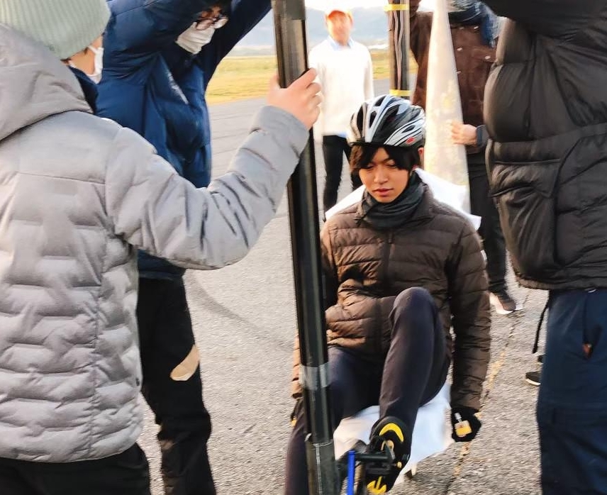

班紹介
翼班
翼班とは飛行機の主翼を制作する班です。大きな主翼を作るため、長い時間がかかり、また高い精度が求められます。主に主翼の断面となる板（リブ）を約200枚作ったり、長い主翼を１１本に分けて作ったり、主翼が揚力を生み出せるように翼にフィルムを貼り付けたりというような作業をしています。大きなものを１から作りたい、細かい作業が好き、飛行機が飛ぶ仕組みを理解したいなどの人におすすめです。

電装班

電装班は計器によるデータ収集や操舵時のサーボ制御を行います。プログラミングやマイコン制御を多用するので、他の班より勉強することが多いです。しかし先輩方が分かりやすく教えてくださるので、それらの知識を完璧に身につけることができます。電装班は他の班とは違い、家でも作業できるので、キャンパスが吹田じゃない人にもおすすめです。
操舵・パイロット
操舵班はパイロットが兼任することが多く、主に飛行機を操縦するために必要な機構を作ります。パイロットは飛行機を1秒でも長く飛ばすために日々鍛えています。トレーニング方法は、ロードバイク、ランニング、筋トレ（吹田キャンパスのジムも使用可能）です。
駆動班

駆動斑は精密な機械を用いて色々な細かい部品を作ったり、快適なペダリングを手掛けます。部品は一つ一つとても精密で、0.01mmほどの精度が要求されます。（参考程度に、サランラップの厚さは0.015mmです。）
プロペラ班
プロペラ班は文字通りプロペラを作る班で、１から手作りします。作り方は、まず専用のPCソフトを使って設計します。次に様々な素材・加工を通して 軽く美しいプロペラを目指します。プロペラのデザインも自由で、特にプロペラが回っているときの光景はとても綺麗です。また、プロペラを家に持って帰って飾れるのはプロペラ班の特権です。

フレーム班

フレーム班は人力飛行機のコクピットなど骨組み部分の製作を担当します。作業内容はカーボンパイプの加工や接着がメインです。ハンドベルトサンダーと呼ばれる工具やエポキシ樹脂を使って加工します。普通の工作では使用しないような工具を使って工作をしたい人や飛行機の設計に関わってみたい人などにおすすめです。